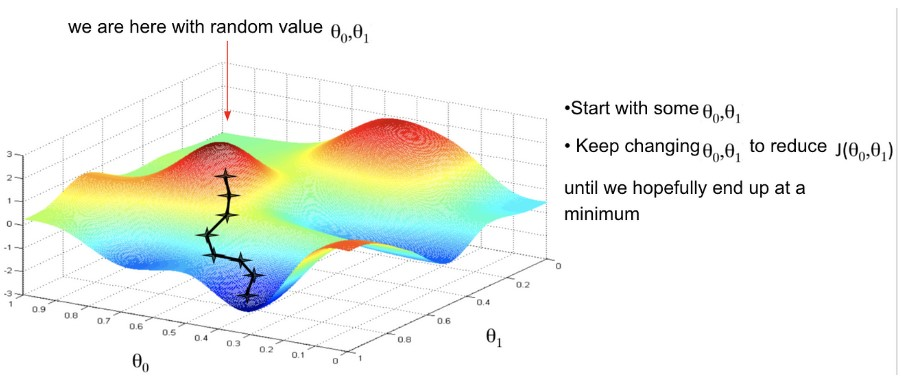

Cette page présente les différents algorithmes utilisés pour répondre au problème.
Les noms des algorithmes sont purement arbitraires.
L'algorithme est basé sur la méthode du "bruteforce". Le principe est de trouver le meilleur board en les testant tous. On génère et teste tous les board en stockant le meilleur dans une variable auxiliaire. Une fois tous les boards testés, on peut être sûr d'avoir obtenu le meilleur pour l'instance passée en paramètre. Cet algorithme est donc très précis. Cependant, l'algorithme atteint rapidement des temps très élevés...
Notre Algorithme "Gradient Descent" fonctionne comme décrit sur l'image ci-dessous, La différence principale est que l'input a une dimension variant de 8 à 15 (8 pour les régions +0 à 7 pour les Sanctuaires).
Le problème c'est que le nombre de possibilités est tout bonnement gargantuesque. Et de plus, cet algorithme pousse vers un optimum local, ce qui n'est pas nécessairement le maximum global, c'est pourquoi on réitère l'opération de nombreuses fois avec des inputs choisis au hasard.